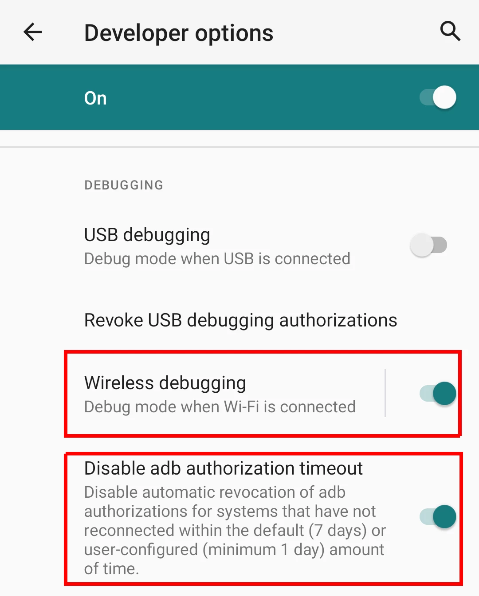
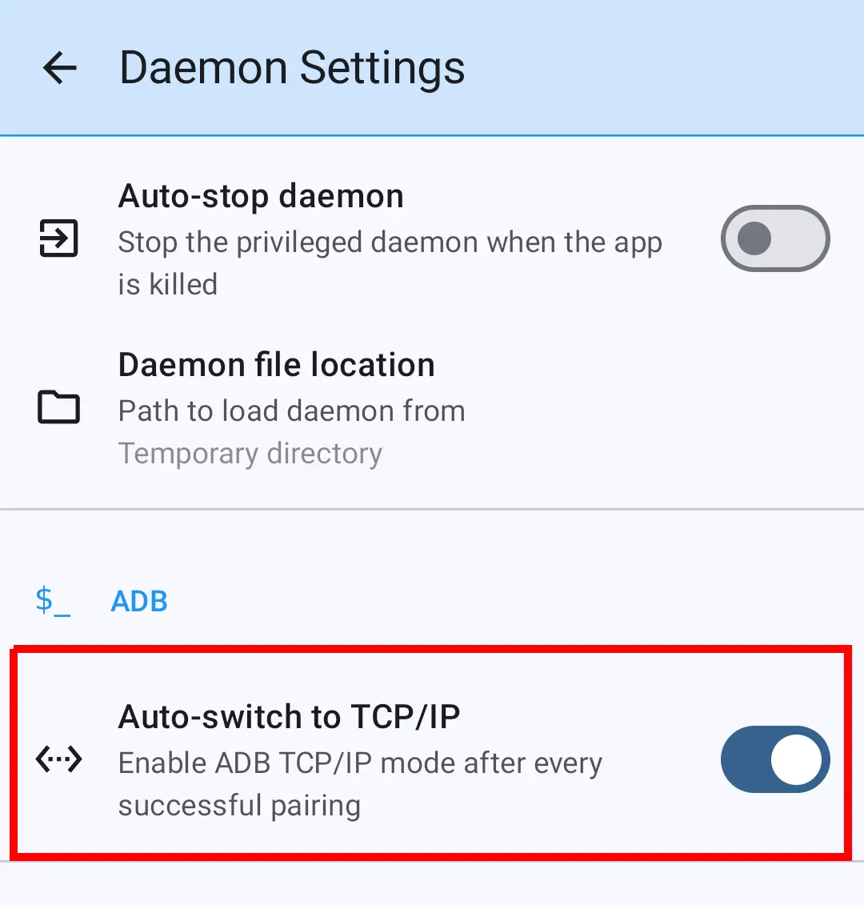

Android 11 o superior
Nota
¿Utilizando Android 10 o versiones anteriores? Sigue la guía Android 10.
En Android 11 o superior, es posible activar la depuración inalámbrica sin conectarse a un ordenador. Hay una opción integrada para activar la depuración inalámbrica (sobre Wi-Fi).
Servicio mDNS¶
Android tiene un servicio llamado mDNS (multi-cast Domain Name System) que facilita el descubrimiento de servicios en la red local. adb confía en este servicio para descubrir y conectarse automáticamente a los dispositivos una vez que estén emparejados.
Si el servicio mDNS funciona correctamente, no es necesario introducir manualmente los puertos de emparejamiento y conexión, sino solo el código de emparejamiento. La aplicación descubre automáticamente los puertos usando el servicio mDNS.
Si el servicio mDNS no funciona en tu dispositivo, puedes probar algunas cosas:
- Deshabilitar la fuerza de depuración inalámbrica (y depuración USB) inicia el servicio
mdnsd(que no puede hacerse manualmente sin root). - Forzar la detención de la aplicación recrea los escuchadores de difusión
mDNS.
Nota
Antes de continuar, asegúrate de que has habilitado las Opciones de Desarrollador.
Emparejamiento ADB / Conectando¶
Activa la depuración inalámbrica en las opciones de desarrollador, y también comprueba el tiempo de espera de autorización ADB para evitar repetir los pasos de emparejamiento una y otra vez.

Es un proceso de 2 pasos:
- Emparejamiento (necesita puerto y código)
- Conexión (necesita puerto de conexión)
El emparejamiento es un mecanismo de autenticación algo parecido a la sincronización con Bluetooth. Mientras se conecta es similar al legado conexión TCP/IP.


Hay 2 opciones para realizar el emparejamiento y conexión. Proceda con el que le resulte más conveniente.
Método de emparejamiento 1: Notificación¶
- Conecte su dispositivo a una red Wi-Fi.
- Abre la aplicación y pulsa Acceso ADB1. Bajo la opción de emparejamiento 1, pulse "Mostrar notificación" para iniciar el servicio de emparejamiento. Aparece una notificación.
- Habilitar la depuración inalámbrica en las opciones de desarrollador.
- Abre la pantalla de depuración inalámbrica y pulsa en Emparejar el dispositivo con el código de emparejamiento".
- Tenga en cuenta el (1) número de puerto de emparejamiento, (2) código de emparejamiento, y (3) número de puerto de conexión.
- Introduzca los 3 parámetros en la notificación uno por uno según lo solicitado. Pulse Intro / Enviar botón en la notificación después de introducir cada valor.
El emparejamiento se realiza después de introducir ambos parámetros de emparejamiento. Mientras la conexión se realiza tan pronto como se introduce el puerto de conexión.
Información
No se le pedirá que introduzca el emparejamiento y los puertos de conexión si mDNS service está funcionando correctamente.
Método de emparejamiento 2: Pantalla dividida¶
- Conecte su dispositivo a una red Wi-Fi.
- Abre la aplicación y pulsa Acceso ADB1. Pulse el botón "Abrir opciones de desarrollador" para abrir lo mismo.
- Habilitar la depuración inalámbrica en las opciones de desarrollador.
- Abre la pantalla de depuración inalámbrica y pulsa en Emparejar el dispositivo con el código de emparejamiento".
- Tenga en cuenta el (1) número de puerto de emparejamiento, (2) código de emparejamiento, y (3) número de puerto de conexión.
- Cambiar a Split-Screen para abrir simultáneamente la aplicación y las opciones de desarrollador.
- En la aplicación, desplácese a la opción de emparejamiento 2.
- Introduzca el código de emparejamiento y el puerto, y pulse el botón "Emparejar". El emparejamiento se realiza.
- Después del emparejamiento exitoso, se abre la sección de conexión. Introduzca el puerto de conexión y pulse el botón "Conectar". Conexión realizada.
Información
No es necesario introducir manualmente los puertos de emparejamiento y conexión si mDNS service está funcionando correctamente. Estos campos se completan automáticamente.
Nota
Deberías dejar la depuración inalámbrica o depuración USB habilitada en Opciones de Desarrollo. Desactivar el ADB desconectará la aplicación del ADB.
ADB depende del Wi-Fi¶
Un problema con el emparejamiento es que necesitas mantener el dispositivo conectado a una red Wi-Fi para mantener activada la depuración inalámbrica. Pero el dispositivo puede desconectarse de una red Wi-Fi intermitentemente, especialmente cuando la pantalla está apagada. En este caso la aplicación pierde la conexión ADB. Puede ser frustrante.
Hay dos posibles soluciones a este problema:
-
También habilita la depuración USB junto con la depuración inalámbrica antes de realizar la emparejamiento.
-
O compruebe la opción Cambio automático a TCP/IP en los ajustes de la aplicación. Reinicia el daemon ADB (
adbd) en el legado modo TCP/IP después de cada emparejamiento exitoso.
Ahora, después de cada emparejamiento, puedes desactivar la depuración inalámbrica y dejar la depuración USB activada.
Un beneficio adicional de la segunda aproximación es que incluso si apagas la depuración USB, simplemente actívalo y la aplicación debería conectarse al ADB. No se requiere ningún re-emparejamiento a menos que reinicie el dispositivo. Se debe a que la configuración TCP/IP (propiedad del sistema: service.adb.tcp.port) no se reinicia cuando se deshabilita la depuración USB. Ver más detalles here.